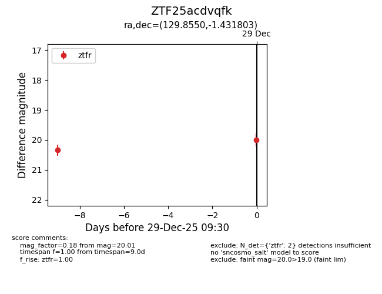
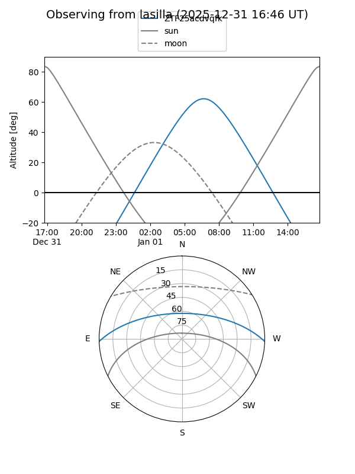
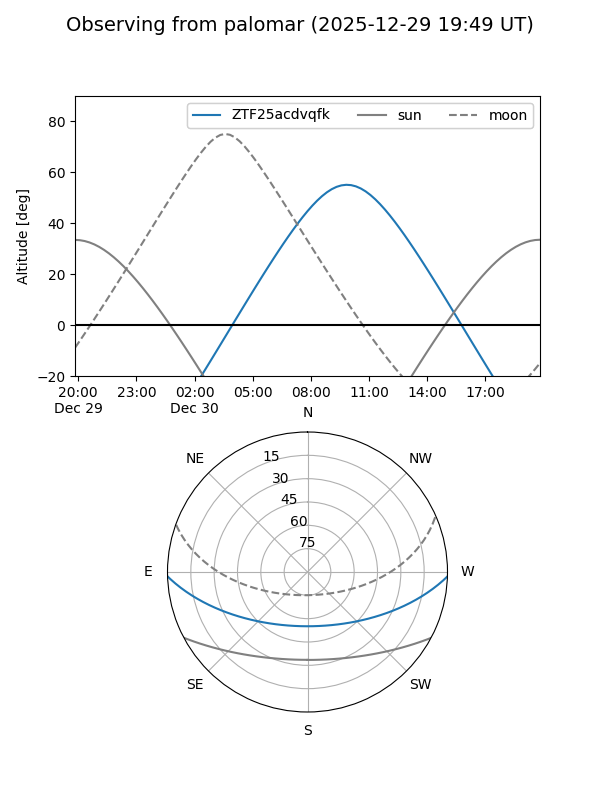

ZTF25acdvqfk
Target ZTF25acdvqfk at 2025-12-20 11:05
Aliases and brokers:
FINK: fink-portal.org/ZTF25acdvqfk
Lasair: lasair-ztf.lsst.ac.uk/objects/ZTF25acdvqfk
ALeRCE: alerce.online/object/ZTF25acdvqfk
alt names
ZTF25acdvqfk (ztf,fink_ztf)
Coordinates:
equatorial (ra, dec) = 129.8550,-1.43180
equatorial (HMS+DMS) = 08:39:25.19,-01:25:54.49
galactic (l, b) = (227.3587,+23.10790)
Flags:
Photometry:
last ztfr=20.34
1 ztfr detections
Lightcurve

Visibility


Additional plots